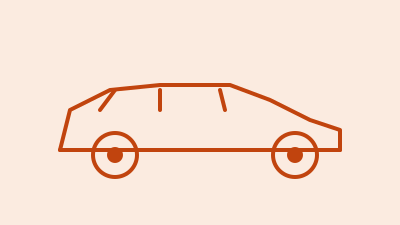

Skoda Kylaq Review 2026: Price, Automatic and Practicality

Category illustration; not a photograph of the reviewed vehicle.
The Kylaq has a relatively easy proposition to understand: one turbo-petrol engine, a choice of manual or conventional automatic, and a compact-SUV shape. That simplicity helps if you are tired of comparing several fuel systems. The harder decision is how much extra to spend on the gearbox and equipment without moving beyond the budget that brought you here.
Specification-based buying review, checked 23 October 2026. We have not road-tested this vehicle for this article. Quoted figures are manufacturer information; recommendations are our editorial assessment.
Key Specifications at a Glance
| Item | Published information |
|---|---|
| Official starting price | ₹7,59,000 |
| Engine | 1.0 TSI petrol; 85 kW; 178 Nm |
| Transmissions | Six-speed manual or six-speed torque-converter automatic |
| Quoted boot capacity | 446 litres |
The ₹7.59 Lakh Starting Point
Skoda’s live model page listed the Kylaq from ₹7,59,000 on 23 October. The same page identifies Classic as manual-only and lists automatic availability from Classic+ upwards. The base price therefore should not be used as the price of an automatic Kylaq.
Our first comparison would be Classic+ automatic against the next trim that adds equipment you genuinely need. Ask for a side-by-side quotation with insurance and accessories kept consistent. An entry trim with the correct gearbox may fit a commuter better than a richer manual.
Engine and Automatic: What the Numbers Tell You
The 1.0 TSI is rated at 85 kW and 178 Nm. That is the manufacturer’s output specification, not a measurement of performance in your traffic conditions. The six-speed automatic is identified as a torque-converter unit, while the manual also has six speeds.
If choosing the automatic, test parking-speed control and a slow incline. If choosing the manual, pay attention to clutch effort and how often you shift on your regular route. Do not judge either version solely on a brief acceleration demonstration by the salesperson.
Boot Space and Family Use
The published 446-litre boot figure is a useful reason to investigate the Kylaq, but volume alone cannot answer a family’s luggage question. Bring the pushchair, large suitcase or folded mobility aid that needs to fit. Check the opening, loading height and the space left with the rear seats occupied.
Rear-seat comfort also needs a real seating check. Position the driver’s seat correctly, then try the seat behind it. If three people regularly sit across the rear bench, test that exact arrangement. We have not conducted those checks ourselves for this article.
Which Features Deserve the Upgrade?
Skoda’s range page advertises equipment including ventilated front seats and electric seat adjustment, with availability dependent on the version. Treat the feature list as a menu until the dealer shows the specification for the car on your quotation.
Seat comfort, visibility and a usable parking aid deserve early attention. A feature is poor value if you rarely use it, however attractive the upgrade looks in a brochure. Ask to operate the infotainment and climate controls yourself rather than watching a quick demonstration.
Ownership Strengths and Reservations
The clear engine choice and availability of a torque-converter automatic make the Kylaq easy to shortlist on paper. Its quoted luggage capacity is another point in its favour. The reservations are equally practical: there is no need to pay for decorative extras before confirming the rear seat, parking fit and local workshop convenience.
Request the written warranty and service-package details, including exclusions. Check whether your chosen workshop offers a realistic appointment schedule. Do not turn somebody else’s repair experience into a guaranteed prediction for your car, either positive or negative.
Flaming Piston's Take
The Kylaq deserves a place on a compact-SUV shortlist when you want a turbo-petrol with a conventional automatic. Start by comparing the lower automatic trims, then spend upwards only for useful equipment. The boot figure is promising; a family seating and luggage trial should decide whether it works for you.
FAQs
Does the cheapest Kylaq have an automatic gearbox?
No. The official page lists Classic as manual-only and automatic availability from Classic+ upwards.
What type of automatic does it use?
Skoda identifies it as a six-speed torque-converter automatic.
Is 446 litres our measured boot result?
No. It is the manufacturer’s published capacity.
Related Reading
Sources: Skoda Auto India. Official model pages, specification tables and available manufacturer brochures checked 23 October 2026.
Back to reviews